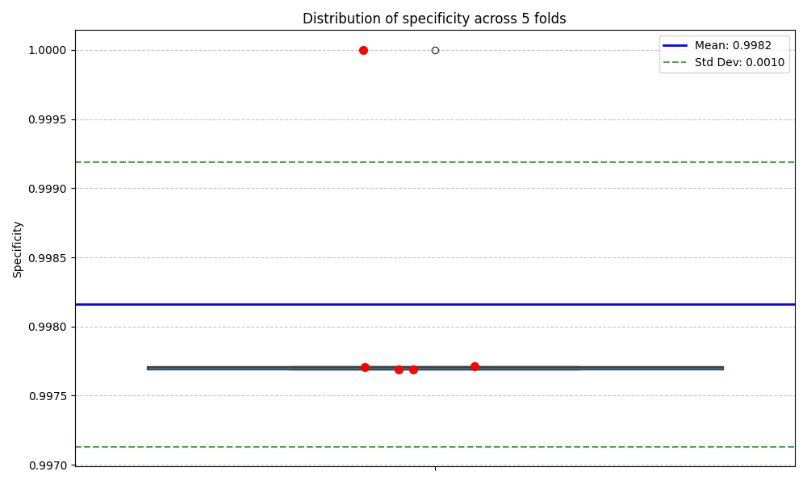
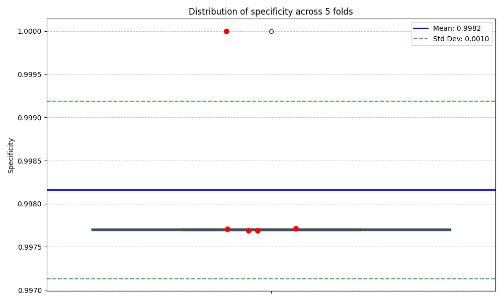
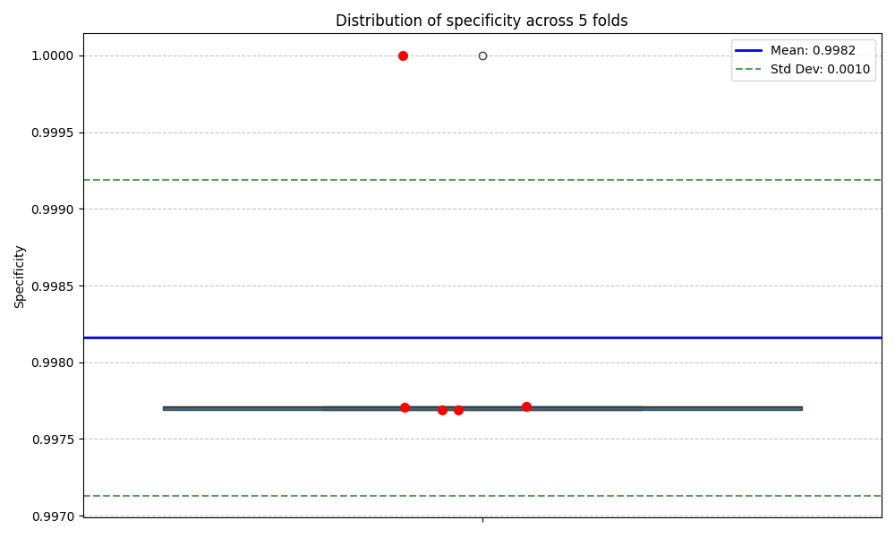

Analysis date: 2025-03-21 13:29:04
| Metric | Mean | Std Dev | Min | Max |
|---|---|---|---|---|
| precision | 0.6100 | 0.3847 | 0.0000 | 1.0000 |
| recall | 0.7500 | 0.4330 | 0.0000 | 1.0000 |
| f1_score | 0.6611 | 0.3911 | 0.0000 | 1.0000 |
| auc_roc | 0.9679 | 0.0627 | 0.8738 | 1.0000 |
| specificity | 0.9982 | 0.0010 | 0.9977 | 1.0000 |

The metrics show consistency across folds, indicating that the model generalizes well to unseen data. The high variation in F1-score (CV=0.592) might indicate some instability in predictions across different data subsets.
The Artificial Neural Network model shows overall good performance in classifying anomalies in the predictive maintenance dataset.